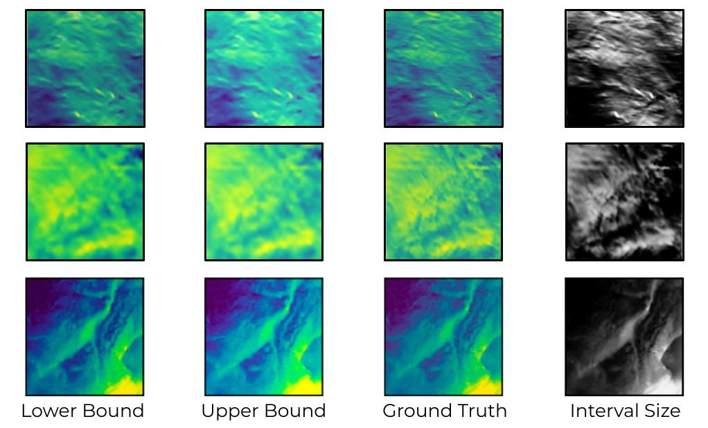
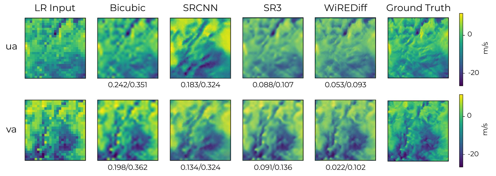

This research builds off of the work accomplished in WiSoSuper. WiREDiff is a novel application of diffusion models to wind speed SR which makes use of quantile regression to computationally-efficiently produce and average an interval of predicted wind velocities. We provide a benchmark of traditional deep learning-based SR techniques on wind data fields, and demonstrate that diffusion models—and the WiREDiff in particular—have significant applications in climate scenarios.
Motivation
Diffusion models, originally proposed in 2015, have seen an increase in interest due to their training stability and their promising sample quality results in generative tasks. Thus, they offer potentially favorable trade-offs compared to other types of deep generative models. Diffusion models work by corrupting the training data by progressively adding Gaussian noise, slowly wiping out details in the data until it becomes pure noise, and then training a neural network to reverse this corruption process. Running this reversed corruption process synthesizes data from pure noise by gradually denoising it until a clean sample is produced. This synthesis procedure can be interpreted as an optimization algorithm that follows the gradient of the data density to produce likely samples. The notion of generating data using diffusion techniques originates from the concepts in physics, more specifically non-equilibrium thermodynamics, which deals with the compression and spread of fluids and gases based on energy. This motivates the application of diffusion-based methods to wind speed prediction.
As a stochastic process, diffusion-based methods can produce a wide distribution of potential SR outputs. Therefore, these models do not provide a way of statistically guaranteeing the degree of confidence they have in their generated results. In the context of renewable energy integration, it is important for infrastructural planners and policy-makers to be able to trust that the high resolution wind speed predictions generated by the latent diffusion model are true to reality. To this end, we can make use of quantile regression construct an pixel-wise interval around each generated pixel such that the true wind speed value corresponding to that pixel lies within the interval with a probability set by the user. This approach is far more computationally-efficient than the naive sampling method, in which each test image needs multiple sampled variations and each diffusion model inference step requires iterative denoising steps.
WireDiff is a pretrained super-resolving diffision model that is fine-tuned using quantile regression algorithms to obtain the lower and upper bounds. We then average the bounds to produce the outputs in the test set for the WiREDiff model. Thus, the WiREDiff performs the SR task by applying conformal prediction intermediately, taking an LR data field as input and generating an HR data field that is the mean of the calibrated upper and lower bounds of the output.
Quantile Regression
The bounds for SR extracted via quantile regression are shown below. The left and right columns correspond with the lower and upper bounds of the interval, respectively, and the rightmost column contains the interval size (the difference between the lower and upper bounds).
Sample Output
A comparison of wind outputs from each model, with reported MSE/MAE values. While the outputs of current models are pixelated (bicubic) or high-contrast (SR CNN) our contributed diffusion model is the most accurate. The WiREDiff output has slightly more higher frequency details than the SR3.
These results indicate that diffusion-based models have significant applications in climate scenarios, as they more accurately and reliably generate results that match the spectral dynamics of the ground truth than traditional CNNs or interpolation techniques. In particular, our proposed model, the WiREDiff, demonstrates promising improvements upon standard SR techniques. When compared with averaging the distribution of diffusion outputs, the WiREDiff approach is less computationally expensive---inference can be accomplished with a single forward diffusion pass as opposed to running inference multiple times and averaging the generated outputs. Additionally, our benchmarking results show that the WiREDiff generates the most accurate and physically realistic SR data fields. We suspect that the WiREDiff model may outperform the diffusion model because quantile regression produces well-defined lower and upper bounds for the confidence interval of each pixel. Averaging out the lower and upper bounds provides less room for error, so on average across all the pixels, we are producing consistently smaller errors. Without this calibration, the diffusion model has higher tendencies for outliers that stray further away from the true model.